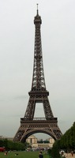

Paris no se hizo en un dia. La ciudad se ha forjado a traves de los años y
de los siglos siguiendo el espiritu y la sensibilidad de cada epoca, sacudida
por los acontecimientos y convulsiones de los que ha sido testigo.
La ciudad fue fundada en el siglo III a.C. por los parisii, una tribu
celta de pescadores. Durante el Imperio Romano, la ciudad fue conocida con el
nombre de Lutecia, pero en el 400, la ciudad ya habia adoptado su nombre
actual: Paris. En el año 508 Paris fue invadida por una tribu barbara, los
francos, que la convirtieron en su capital. Tras unos siglos de decadencia,
París se convirtio en el 987 en la capital de Francia, el entonces
diminuto reino de Hugo Capeto. Desde ese momento, Paris ha seguido siendo la
capital de Francia, primero bajo las sucesivas dinastias de los Capetos, los
Valois y los Borbones, y a partir de la Revolucion Francesa de 1789, bajo las
sucesivas republicas.

Catedral de Notre-Dame
La catedral de Notre-Dame, situada en el corazon de Paris y en el corazon
de los parisinos, ha sido testigo de algunos de los grandes momentos de la
historia de la capital. Este magnifico monumento religioso, una de las obras
maestras del arte frances, fuente de inspiracion literaria y visual durante
siglos, es un mito viviente que siempre tiene algo que descubrir.
El palacio del Louvre fue durante ocho siglos la residencia de reyes y
emperadores. Diversas ampliaciones, que resumen tambien la historia de la
arquitectura, han hecho del Louvre un inmenso palacio real. Hoy es famoso por
tener una de las colecciones de arte y antigüedades mas ricas del mundo. Lo
mejor es seleccionar primero las salas que se quieren visitar y regresar en
otra ocasion para ver el resto del museo.

El monumento más famoso de Paris y quizas del mundo entero se alza en los
jardines que antaño se utilizaron como campo de maniobras. Cerca se encuentra
la Escuela Militar, un bello ejemplo de arquitectura francesa del s. XVII. La
torre es el lugar ideal para observar la ciudad a vista de pajaro, hacer una
pausa y disfrutar de la sensacion de formar parte de este maravilloso e
historico lugar.